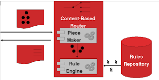
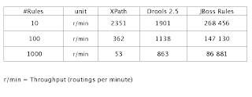
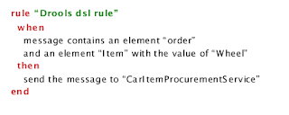

Rush Hour and Content Based Routing (Michael Neale)
Recently I (and Mark) attended JBoss World in Berlin. We ran a few sessions on rules, and had 2 excellent end user presentations, all was well received. Its good to see the cool stuff people are doing with rules, so I thought I would share a summary.
Content Based Routing – Michael Frandsen (Syngenio)
Content Based Routing (CBR) is used in messaging systems when you need to, well, route messages, based on, er, content ! Pretty obvious really ! Normally this is part (in some form) of messaging middleware or things like ESBs (enterprise service bus). In fact, its part of JBoss ESB (something I confess I am not overly familiar with, what with working on our own product, we don’t get to look around at our stable mates that often, but I do know they use rules).
CBR is also known as “smart routing” and can be used for clever things like routing messages based on transaction value (ie higher value purchases get special treatment when load balancing) or based on things like who the customer is, the possibilities are endless.
Michael Frandsen (JSR-94 lead/contributor) has been working on CBR as part of his day job. He used rules (starting with Drools 2.5, moving up to 3.0.4) and XPath to provide declarative routing rules based on message content (which can be arbitrarily complex as needed, and perhaps involve large numbers of rules). Generally XPath or similar is used, as it provides a declarative way to make assertions over the contents of a message (normally the actions in routing is very simple, just telling it where to send the message !).

Michael’s architecture on how the rule engine can reason over message contents for CBR.The issue with XPath is that it is not known for its raw performance, but for IO and stateless things like message routing, you would think this is not really an issue. Couple this with the fact that a lot of the times the routing rules are minimal, I would have though XPath would shine compared to a rule engine for message routing.
Oh how wrong I was. Michael showed that even for the simplest cases, the smallest number of rules, that JBoss Rules blew away XPath implementations – this shocked me as normally rules shine with stateful scenarios (but all his message routing rules are stateless), but would not have as much advantage for stateless.
Moreover, when the complexity and number of rules scaled up (Michael pushed it to 1000 rules, which would be a LOT of rules for routing, but in some enterprises, it is possible) XPath was much slower then the rule based approach.

From this table you can see that JBoss Rules is at least 2 (sometimes 3) orders of magnitude faster then XPath. The nice scaling of throughput as the rule count increases also shows RETE really paying off. Note that this is for STATELESS CBR, and in no case is the rules approach slower, always faster. You can also see the jump from Drools 2.5 to Drools 3 (JBoss Rules) which re-inforces the power of full-RETE.
Using DRL+DSL for message routing also made for very attractive routing rules (none of this is using XPath):
You can see Michael’s presentation here.
Traffic control (Leo van den Berg)
UPDATE: The presentation for this in PDF format can be downloaded from here.
Leo van den Berg, working with the University of Valencia and the Dutch ministry of transportation, has been working on a rule based traffic management system. We all know and love gridlock in our major cities, and what they are doing is building open source tools and applications for “traffic engineers” to use.
Traffic control systems do things like display messages on electronic boards, close and open lanes, traffic lights, accident reports, emergency response etc.
The architecture used uses JMS heavily to collect “event” data as asynchronous messages, and feed it (after some filtering) to the rule engine. The rule engine collects/reasons over this data, and they makes conclusions (included in Leo’s demo was triggering an SMS warning to tell and engineer to open an optional lane).
Leo even had a cool live demo – using their thick client front end – which had awesome stuff like live video feeds from the relevant traffic cameras. Seeing a use case like this was great to see. I imagined it like a Giant Mind watching over us (well, those in Amsterdam etc at least). But you can relax, at the end of the day, its the traffic engineers (humans) who actually do the real button pushing/decisions based on the informations and suggestions given to them. So its not SkyNet just yet ;)
Hopefully I can show you some more of this application in a future post. The really nice thing is that what they are working on will be open source as well.
Ich bin ein Berliner !

{kind=link}
{kind=link}
{kind=link}